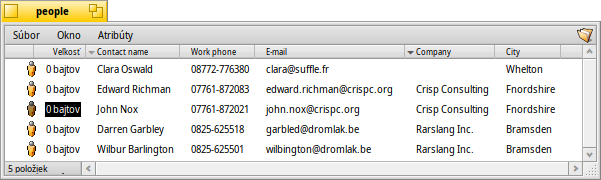

Slovenčina
Slovenčina Català
Català Deutsch
Deutsch English
English Español
Español Français
Français Italiano
Italiano Magyar
Magyar Polski
Polski Português
Português Português (Brazil)
Português (Brazil) Română
Română Suomi
Suomi Svenska
Svenska 中文 ［中文］
中文 ［中文］ Русский
Русский Українська
Українська 日本語
日本語Atribúty
Atribúty sú dátové polia, ktoré patria súboru, no nie sú jeho súčasťou, teda napr. nepočítajú sa to veľkosti súboru a môžu sa kopírovať alebo meniť bez akejkoľvek manipulácie so samotným súborom. Systém používa tieto atribúty na ukladanie napr. veľkosti súboru, typu súboru alebo dátumu poslednej úpravy. Dá sa to prirovnať k iným operačným systémom a ich súborovým systémom.
Rozdiel je taký, že môžete pridať hocijaký atribút hocijakému súboru a zobraziť ho alebo ho urobiť upraviteľným v okne Trackera. Musíte iba definovať typ atribútu, ktorý chcete priradiť typu súboru (napr. reťazec, celé číslo alebo čas) a dať mu názov a popis.
Súbor samotný nemusí vôbec nič obsahovať. Pozrite sa napríklad na tieto súbory Ľudí:
Toto sú súbory s nulovou veľkosťou s priradenými atribútmi, atribút e-mailu osoby „John Nox“ používateľ práve upravuje v Trackeri.
Ak tieto atribúty indexujete, ako sa predvolene indexujú súbory Ľudí, E-mailov alebo zvuku, bude ich možné vyhľadať rýchlym systémom hľadania Haiku.
 Atribúty v Trackeri
Atribúty v Trackeri
Atribúty sa zobrazujú podobne ako databázy alebo tabuľky. V Trackeri môžete určiť, ktoré atribúty chcete mať zobrazené (stĺpce) a zoraďovať podľa toho zoznam súborov (riadky).
To sa robí tak, že v Trackeri kliknete na menu a vyberiete atribúty, ktoré chcete zobraziť. Prípadne môžete jednoducho kliknúť na záhlavie stĺpca a vybrať položky z kontextového menu. Meniť poradie stĺpcov môžete jednoduchým pretiahnutím hlavičky stĺpca myšou na inú pozíciu. Ak stĺpec nepotrebujete, zbavíte sa ho pretiahnutím myšou von z okna.
Dvojitým kliknutím na čiaru deliacu dva atribúty v hlavičke sa automaticky zmení šírka stĺpcov na optimálnu.
Kliknutím na hlavičku stĺpca prepínate medzi vzostupným a zostupným usporiadaním. Stanoviť sekundárne usporiadanie môžete držaním klávesu SHIFT počas klikania na hlavičku stĺpca. Napríklad môžete zoradiť vaše súbory Ľudí podľa firmy a v tomto usporiadaní ich zoradiť podľa mena kontaktu. Sekundárne poradie je označené svetlejšie zafarbeným indikátorom vedľa hlavičky.
Úprava týchto atribútov je rovnako jednoduchá ako premenovanie súboru: Buď kliknite na položku alebo stlačte ALT E a presúvajte sa medzi atribútmi pomocou TAB a SHIFT TAB. ESC opustí režim úpravy bez použitia zmien.
Atribúty v Termináli
Ak uprednostňujete príkazový riadok alebo plánujete pracovať s viacerými súbormi s použitím skriptovania, existuje niekoľko príkazov na ovládanie atribútov v Termináli.
listattr
listattr vypíše zoznam atribútov súboru, no nezobrazí obsah týchto atribútov.
použitie: listattr 'názov súboru' ['názov súboru' ...]
Z nášho obrázka hore:
~/people ->listattr Clara\\ Botters
File: Clara Botters
Type Size Name
----------- --------- -------------------------------
MIME String 21 "BEOS:TYPE"
Text 14 "META:name"
Text 6 "META:nickname"
Text 1 "META:company"
Text 18 "META:address"
Text 8 "META:city"
Text 1 "META:state"
Text 1 "META:zip"
Text 1 "META:country"
Text 1 "META:hphone"
Text 13 "META:wphone"
Text 1 "META:fax"
Text 19 "META:email"
Text 1 "META:url"
Text 5 "META:group"
Raw Data 20 "_trk/pinfo_le"
131 bytes total in attributes.
Okrem všetkých atribútov „META:*“, ktoré obsahujú kontaktné informácie, existujú ešte dva atribúty, ktoré spravuje systém:
BEOS:TYPE ukladá typ súboru ako reťazec MIME, tu „application/x-person“. Ten určuje predvolenú ikonu a aplikáciu, v ktorej sa súbor otvorí keď naň napr. dvakrát kliknete.
„_trk/pinfo_le“ je atribút, ktorým Tracker sleduje pozíciu ikony súboru.
catattr
catattr zobrazí obsah konkrétneho atribútu súboru.
použitie: catattr [--raw|-r] názov_atribútu súbor1 [súbor2...]
A znova náš príklad:
~/people ->catattr META:city Clara\\ Botters Clara Botters : string : Whelton
addattr
addattr pridá súboru atribút a/alebo mu dá hodnotu.
použitie: addattr [-t typ] attr hodnota súbor1 [súbor2...]
alebo: addattr [-f hodnota-zo-súboru] [-t typ] attr súbor1 [súbor2...]
Typ môže byť:
string, mime, int, llong, float, double, bool, icon, raw
alebo číselná hodnota (ie. 0x1234, 42, 'ABCD', ...)
Predvolený je „string“
Povedzme, že si Clara našla prácu v nadnárodnom Barkelbaer Inc., predtým prázdny atribút „Company“ zaplníme údajom, ktorý je typu „string“ (reťazec znakov):
~/people ->addattr -t string META:company Barkelbaer\\ Inc. Clara\\ Botters
rmattr
rmattr úplne odstráni atribút zo súboru.
použitie: rmattr [-p] attr názov_súboru1 [názov_súboru2...]
„attr“ je názov atribútu súboru
Ak je „-p“ uvedené, „attr“ sa považuje za vzor.
Aj keď by bolo praktickejšie vôbec nevypĺňať atribút „Fax“, môžete ho úplne odstrániť zo súboru Clary napísaním:
~/people ->rmattr META:fax Clara\\ Botters
copyattr
copyattr skopíruje atribút z jedného alebo viacerých súborov do druhého. Štandartne sa obsah súboru neskopíruje.
použitie: copyattr <možnosti> <zdroj> [ ... ] <cieľový priečinok>
Ak chcete skopírovať atribúty a aj dáta samotného súboru, môžete pridať možnosť „-d“ alebo „--data“.
Viac informácií o týchto príkazoch zistíte napísaním názvu príkazu nasledovaným „-h“ alebo „--help“.